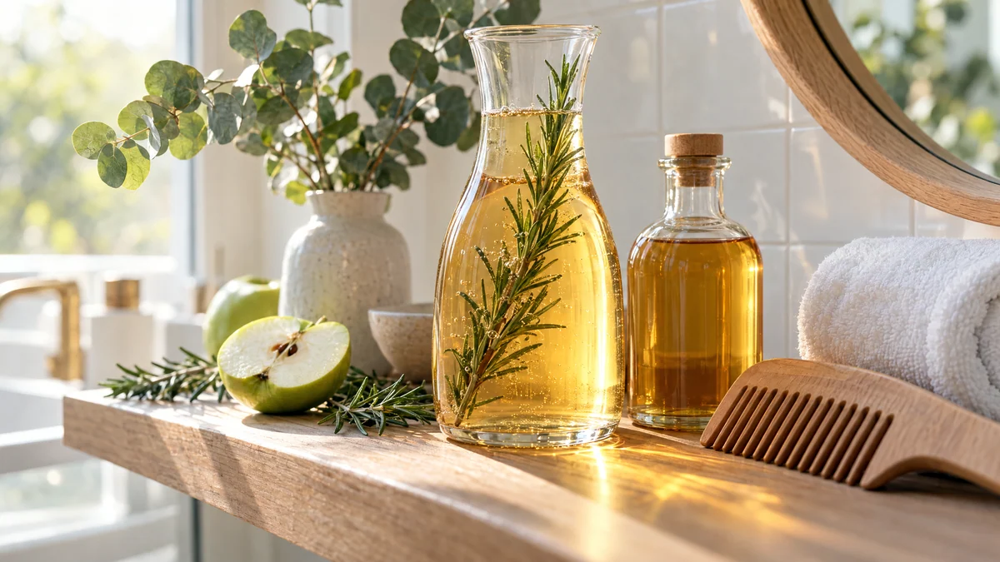

RESTFEST · HEMMASPA
Glanssköljning för håret med äppelcidervinäger och rosmarin
En skvätt äppelcidervinäger, en kvist rosmarin och en kanna vatten. Sköljningen hälls över håret efter tvätten och gör det mjukt, lättkammat och blankt, helt utan köpta produkter. Ett sista steg i duschen som kostar några kronor och doftar som en örtträdgård.
- Förberedelse
- 5 min + 20 min dragtid
- Verkningstid
- 2 min
- Räcker till
- 1 behandling
- Nivå
- Nybörjare
Bra att veta. Gör ett lapptest innan du provar något nytt: stryk lite på insidan av underarmen och vänta ett dygn.
 Det här behöver du
Det här behöver du
Tryck på + vid det du behöver köpa.
Gör så här
- Koka upp vattnet och häll det över rosmarinen i en kanna. Låt dra i 15–20 minuter, tills vattnet har svalnat till ljummet.
- Sila bort rosmarinen och rör ner vinägern.
- Tvätta håret som vanligt med schampo och skölj ur det.
- Luta huvudet bakåt och häll sköljningen långsamt över håret, från hårbotten och ut i topparna. Massera lätt.
- Låt verka i 1–2 minuter.
- Skölj ur med svalt vatten. Doften av vinäger försvinner när håret torkar.
Presentation och användning
- Häll sköljningen i en glaskaraff eller en gammal glasflaska med en rosmarinkvist kvar i, så blir den en dekoration i badrummet.
- Använd sköljningen en gång i veckan i stället för balsam, eller efter hårinpackningen i behandling 36.
- Byt rosmarinen mot kamomill för ljust hår, eller mot mynta för en svalare känsla i hårbotten.
Bra att veta
- Håll ögonen stängda, vinäger svider. Får du det i ögat, skölj med ljummet vatten.
- Späd alltid vinägern. Outspädd vinäger kan irritera hårbotten.
- Använd inte sköljningen på en irriterad eller sårig hårbotten.
- Gör sköljningen färsk varje gång, den håller sig inte.